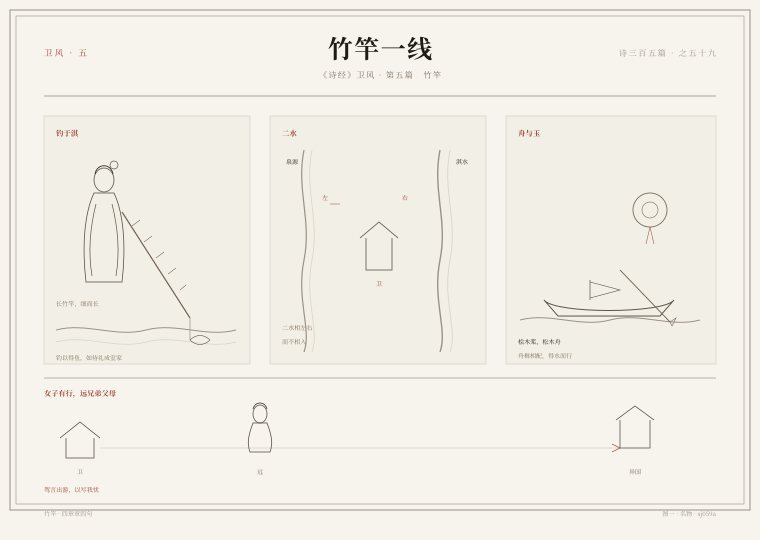
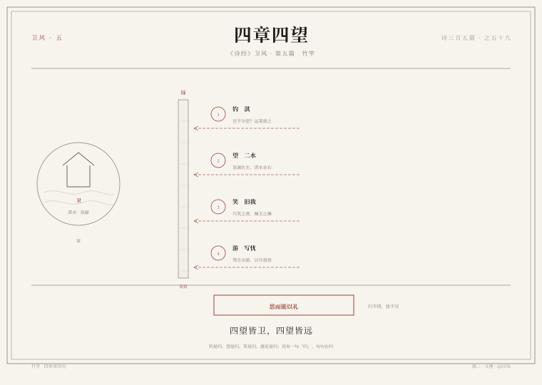

第五十九篇 竹竿
卫风 · 之五 SJ059
朗读 · 普通话
依经文原文朗读，章次不读出；配古琴底乐，不改速、不加拖腔。全库同一音色（豆包 TTS），非播音员录制。
一 解题
诗三判：
- 谁在说：一个远嫁的卫女。第一人称，可能是自作，也可能是诗人代其口吻；无论哪种，口吻是她的。
- 说什么事：思归宁而不得。她想念淇水、泉源、竹竿、旧日的巧笑与佩玉；但「远莫致之」，只能「驾言出游，以写我忧」。
- 为何编在此：卫风第五。前《氓》写被弃后的决绝，此篇写不见答后的自持；一刚一柔，一关门一留门。卫风至此，婚姻的两副面孔都齐了。
《毛序》：「《竹竿》，卫女思归也。适异国而不见答，思而能以礼者也。」
朱子《诗集传》：「赋也。籊籊，长而杀也。竹，卫物。淇，卫地也。卫女嫁于诸侯，思归宁而不可得，故作此诗。言思以竹竿钓于淇水，而远不可至也。」
本库的看法：《竹竿》是一首「不能回去」的诗。
全篇没有一个「归」字，却句句在归：钓淇是归，看泉源淇水是归，想巧笑佩玉是归，驾舟出游还是归。最后「以写我忧」——忧没有消，只是被写出去一点。它不是弃妇诗，是思归诗；不是没有怨，是怨被礼收住。
二 经文
第一章
籊籊竹竿，以钓于淇。岂不尔思？远莫致之。
第二章
泉源在左，淇水在右。女子有行，远兄弟父母。
第三章
淇水在右，泉源在左。巧笑之瑳，佩玉之傩。
第四章
淇水滺滺，桧楫松舟。驾言出游，以写我忧。
分章：四章，章四句。
三 韵读
| 一 |
淇、思、之 |
之（平），三句全押 |
| 二 |
右、弟 |
右古音以，与弟荠部通押；母不入韵 |
| 三 |
左、瑳、傩 |
哿、歌（平上通）；右不入韵 |
| 四 |
滺、舟、游、忧 |
尤（平），四句全押 |
一章三句全押，声音最紧；「远莫致之」四个字一收，像门在远处合上。二章只押「右、弟」，中间隔著「女子有行」，是呼吸，也是路。三章「左、瑳、傩」平上通押，轻而亮，像笑了一下。四章「滺、舟、游、忧」一韵到底，水声、桨声、车声、心事，全落在同一个「忧」上。
四 字义与名物
字义
- 籊籊（tì）——长而杀；细长貌。
- 竹竿——竹，卫物；淇，卫地。钓于淇，是卫地的家常事，也是她想回而回不去的地方。
- 钓以得鱼——毛传说，钓要得鱼，才成其为钓；如妇人待礼，才成其为室家。这不是闲笔，是婚姻的比喻。
- 岂不尔思——我岂不想你。尔，表面是淇水、卫国，深处是那个人、那个家；郑笺说「我岂不思与君子为室家乎」。
- 远莫致之——路远，无法到达。致，至、达。
- 泉源——小水之源；朱子说即百泉，在卫之西北，东南流入淇。
- 淇水——卫地大水，在卫之西南，东流与泉源合。
- 在左、在右——从卫地方位说；不是地理错误，是「二水相左右」的取象。
- 女子有行——行，嫁；女子出嫁。
- 远兄弟父母——远离兄弟父母；不是「走路远」。
- 瑳（cuō）——巧笑貌；一说鲜白。笑而见齿，齿色瑳然。
- 傩（nuó）——行有节度；一说婀娜。不是「驱疫」的傩。
- 滺滺（yōu）——流貌；水悠悠流。
- 桧（guì）——柏叶松身；桧木。
- 楫（jí）——桨。
- 舟楫相配——舟与桨相配，得水而行；如男女相配，得礼而备。郑笺说，此句「伤己今不得夫妇之礼」。
- 驾言出游——驾车出游；言，语助。
- 写——除、宣泄；不是「书写」。
- 忧——思归不得，兼不见答之冷。
名物
- 竹竿与淇水——卫物、卫地；钓是家务，也是乡愁。图一左。
- 泉源与淇水——二水一左一右，是卫的地理；也是「相左右而不相入」的婚姻隐喻。图一中。
- 瑳与傩——笑与步；佩玉；旧日的自己。图一右。
- 桧楫与松舟——舟楫相配；反衬夫妇不配。图一右。
- 兄弟父母——娘家；「远」字一落，归宁的门就关了。
- 出游——车或舟；不是归，是替代；「写忧」是暂时的排遣。
五 今译
第一章
长长竹竿，用来在淇水钓鱼。我怎能不想你？路远无法到达。
第二章
泉源在左边，淇水在右边。女子出嫁，远离兄弟父母。
第三章
淇水在右边，泉源在左边。巧笑时露出洁白的牙齿，佩玉而行，步履有度。
第四章
淇水悠悠流，桧木桨、松木舟。驾车出游，来排遣我的忧愁。
六 章旨
一章：钓淇。
竹竿是卫物，淇是卫地；钓鱼是家常事。她连这件小事都回不去。「远莫致之」一句，把全篇的门锁上。
二章：二水。
泉源在左，淇水在右；一左一右，是家的地理。「女子有行」一句，把地理变成命运：她嫁出去，就远离了兄弟父母。
三章：巧笑。
淇水在右，泉源在左；方位倒过来，像镜头回转。巧笑之瑳、佩玉之傩，是旧日的自己。郑笺说，她虽不见答，仍不恶君子，仍把自己的容貌与礼仪写得美好——这不是炫美，是保存尊严。
四章：舟游。
淇水悠悠，桧楫松舟；舟楫相配，得水而行。反衬夫妇不相配，不得夫妇之礼。驾言出游，是替代；以写我忧，是暂时的排遣。归不得，忧不尽。
四章合看：四章四望，望的都是卫；四章都回不去。
一、二章写「远」，三章写「旧」，四章写「游」；远不可致，旧不可回，游不可归。
七 诗教
- 兴：竹竿兴「待礼成室家」；二水兴「相左右而不相入」；舟楫兴「男女相配」。物象都很家常，所以更疼。
- 观：观「思而能以礼」——不是没有情，是情有边界；观「不见答」的婚姻——不是被打，是被冷；观「出游」作为心理防御——回不去的人，总要找一条路走走。
- 群：可与远嫁者、不能归者同群；也可让那些劝人一味忍的人看见：礼不是没有疼，只是把疼收在里面。
- 怨：怨而不怒。「以写我忧」是收束，不是解决；诗没有让她骂，也没有让她奔，只让她把忧写出去一点。
八 分寸与边界
- 不可把「竹竿」当单纯钓鱼。它是「钓以得鱼，如妇人待礼以成为室家」的兴；也是卫物、乡愁。只读成闲适，全诗就轻了。
- 不可把「岂不尔思」的「尔」只当人。它可以是君子，也可以是卫国、淇水；两层都通，指实一层就窄了。
- 不可把两章方位倒置当作地理错误。方位从卫说；倒置是「二水相左右而不相入」的喻，也是镜头回转。
- 不可把「傩」读成「驱疫」。这里「行有节度」，或读婀娜；不是跳傩。
- 不可把「女子有行」读成「走路」。行，嫁也；「远兄弟父母」是出嫁后的远离。
- 不可把「写」读成「书写」。写，除也、宣泄也；「以写我忧」是把忧排出去一点。
- 不可把「思而能以礼」读成单纯压抑。礼是她的自持，也是她的牢；要看见礼中的疼，不要只看见礼的稳。
九 存疑
- 诗旨：毛序主「卫女思归，适异国而不见答，思而能以礼」；朱子主「嫁于诸侯，思归宁而不可得」；现代多读思乡、远嫁。本库取「思归＋不见答＋守礼」三层。
- 作者：卫女自作，或诗人代其口吻；第一人称极真，但「自叙」不等于「自作」。无确证。
- 「尔」：君子／卫国／淇水；郑笺偏「君子」，朱子偏「淇水」，诗里两层并存。
- 「泉源」：百泉／肥泉；地望有异说。不必指实为某一条水。
- 「瑳」：毛传「巧笑貌」，朱子「鲜白色」；两说可通。
- 「傩」：毛传「行有节度」，今人或读「婀娜」；不是驱疫。
- 「驾言出游」：实游还是想象？诗里可能是想象；无确证。
- 所嫁之国：毛序只说「异国」，朱子说「诸侯」；不必指实为某一国。
十 跨典
- 《邶风·泉水》：「毖彼泉水，亦流于淇。」同一条水，同一种思归；泉水更直，竹竿更静。
- 《鄘风·载驰》：许穆夫人归唁其兄，行动更激烈；竹竿则把行动收成「出游」。
- 《卫风·氓》：氓女被弃后决绝，竹竿女不见答而守礼；一个把门关上，一个把门留着。两篇对读，才见卫风婚姻的两态。
- 《卫风》淇水：《淇奥》的竹、《硕人》的河、《氓》的淇、《竹竿》的泉源与淇水；一条水串起卫风五篇。
- 《礼记·昏义》与妇礼：「女子有行」不是一句家常话，是婚姻礼制；「思而能以礼」也不是天生的好脾气，是礼教之下的自持。
十一 双卡与图
双卡五对：
| 竹竿（钓竿／卫物） |
竹竿（普通竹棍，失诗境） |
| 泉源（卫地百泉） |
泉源（任意泉水源头，失地名） |
| 傩（行有节度／婀娜） |
傩（驱疫跳傩，误） |
| 写（除／宣泄） |
写（书写，误） |
| 有行（出嫁） |
有行（走路，误） |

图一 · 竹竿、泉源淇水、桧楫松舟 名物图

图二 · 钓、望、笑、游，四章四望 义理图
读图三处：
- 竹竿：图一左，一根竹竿垂进淇水；钓的是鱼，想的是家。
- 二水：图一中，泉源与淇水一左一右，并排而不相入；这就是「不见答」的形状。
- 四望：图二，钓、望、笑、游，四章四个动作，最后都落在「远莫致之」。